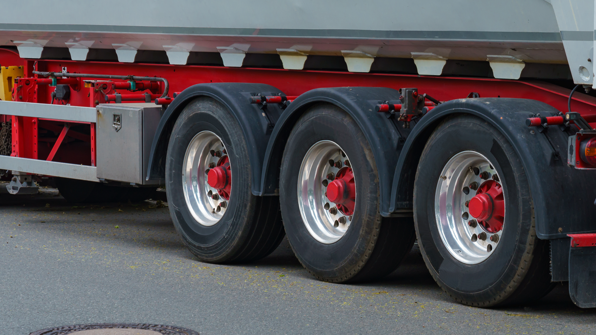

Home / Blog / Wide-Base Single Tires and Retreading
TIRE SPEC GUIDEWide-base singles save weight and fuel over dual tire setups. They don't retread the same way, though — fewer cycles, higher failure stakes, and real equipment requirements.
Published September 7, 2026 · Good Hope Retreaders

Wide-base single tires — one wide tire per wheel position instead of two duals — have been steadily replacing dual setups on trailer and some drive axles across North American fleets. The pitch is straightforward: less weight, lower rolling resistance, more payload. What gets less attention is that a wide-base single doesn't retread the same way a standard dual does, and treating it like one in your tire-cost math or your shop's process is where fleets and retreaders get surprised.
The case rests on weight and fuel. Wide-base singles mounted on aluminum wheels can cut a truck's GVWR by up to 1,100 lbs versus a comparable dual setup, according to Fleet Equipment Magazine — and on a trailer axle, that weight saving translates directly into more payload, with Michelin citing over 700 lbs of extra freight capacity for its wide-base single trailer tire compared to a dual axle. Lower rolling resistance also nets a real, if now more modest, fuel benefit — Trucking Info puts the fuel savings at roughly 2–5%, though that gap has narrowed as low-rolling-resistance dual tires have improved and now offer a competitive alternative for fleets that don't want to make the switch.
A wide-base single carries the full load of what two duals used to share, which means it operates closer to its maximum load-carrying capacity as a matter of routine. That has a direct consequence for casing life: Trucking Info reports that wide-base casings have a somewhat shorter retreadability lifecycle than standard duals, and many fleets cap wide-base tires at a single retread, versus two or three cycles they'd expect from a conventional casing. That's not a defect — it's the tradeoff for running a casing nearer its limit continuously instead of sharing load across two tires.
The failure mode also carries higher stakes. Running a wide-base single underinflated makes the casing more prone to fatigue that can end in a catastrophic failure or a zipper rupture — and because there's no second tire on that axle position to carry the load if one lets go, a wide-base blowout is more likely to take the wheel end with it, an outcome Heavy Duty Trucking flags as a materially higher risk factor for wide-base failures generally. That makes pressure-maintenance discipline even more important on a wide-base fleet than on a dual one — there's no built-in redundancy if a casing is neglected.
As a real-world reference point for how seriously manufacturers treat wide-base casing eligibility: Michelin warrants its X One wide-base casings at 100% for 70 weeks when retreaded through its authorized retread network, and offers a second-retread guarantee within 3 years of the first retread date, capped at 7 years from the casing's original manufacture date. Whatever brand of casing a fleet runs, those kinds of documented, time-boxed retread guarantees are a useful signal of how manufacturers themselves think about wide-base retread limits — worth checking against whatever casing you're running before you build a retread-cycle assumption into your fleet's tire budget.
Wide-base singles remain a legitimate weight and fuel play, but the retread side of the cost equation isn't identical to standard duals: budget for fewer retread cycles per casing, hold inflation-pressure discipline as a non-negotiable given the higher failure stakes, and make sure whichever shop retreads them — in-house or outsourced — has buffing equipment and technicians specifically proven on wide-base casings, not just general retread experience.
We supply buffing machines, rasps, and inspection equipment sized for the full range of commercial tire profiles, including wide-base casings, with transparent all-in Canadian pricing and delivery from our Ontario warehouse — manufacturer-direct, no distributor markup.
Get an equipment quote →Send us your requirements and we'll get back to you within 24 hours with pricing and lead times — no obligation.